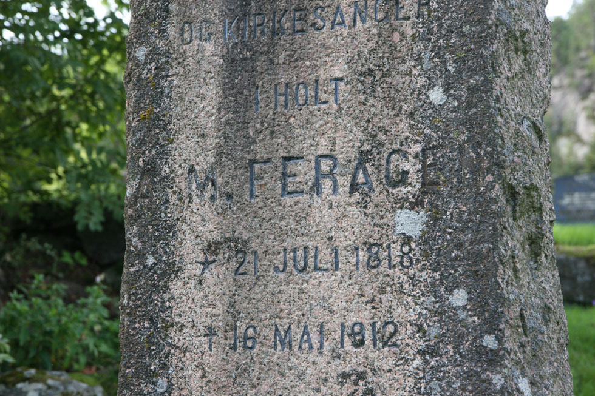
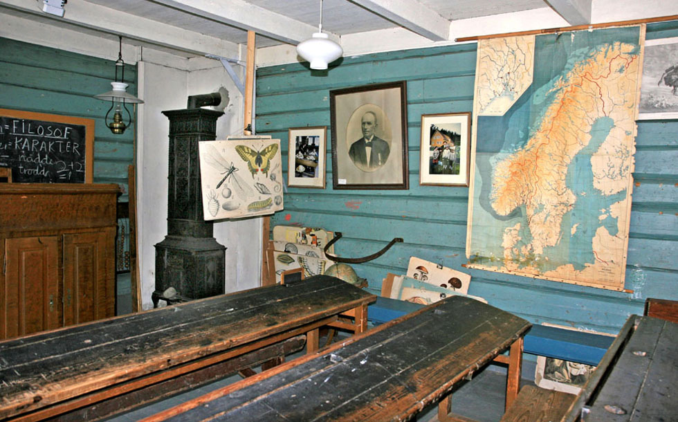
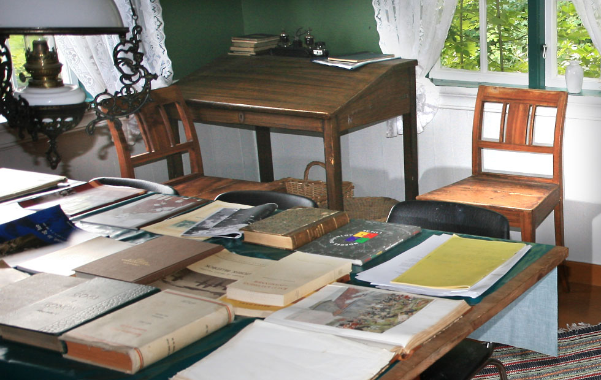
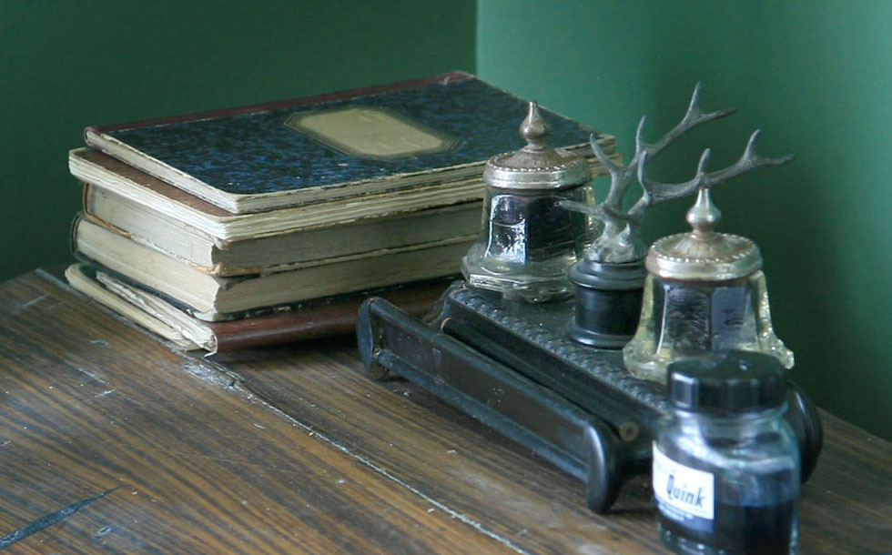
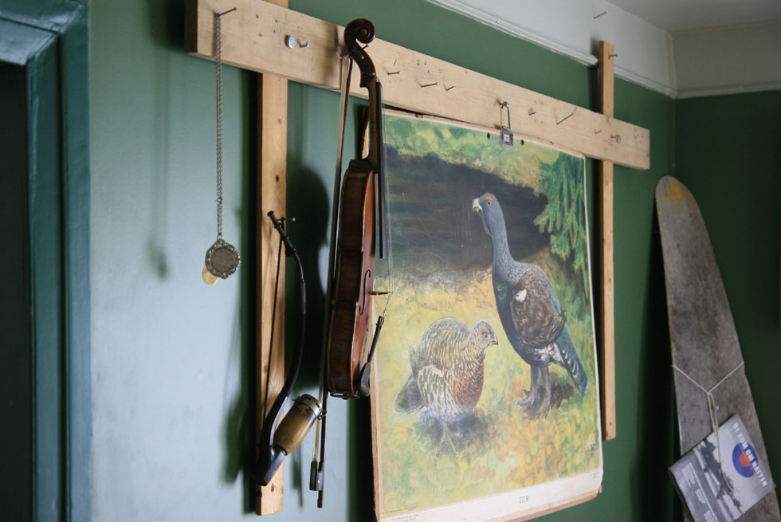
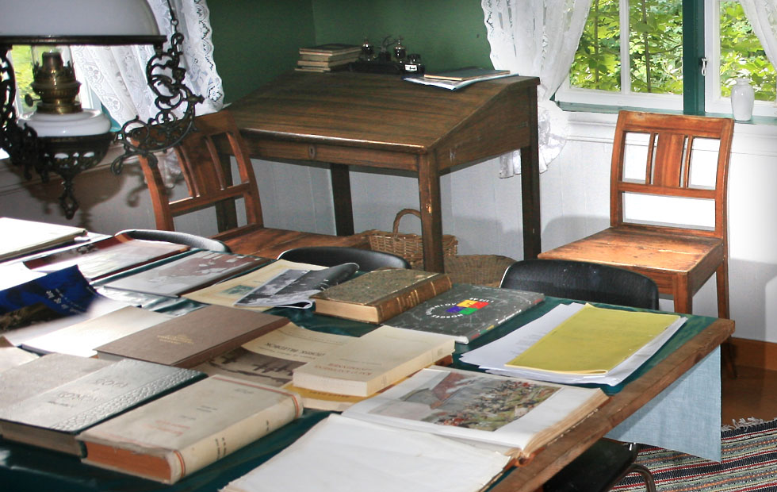
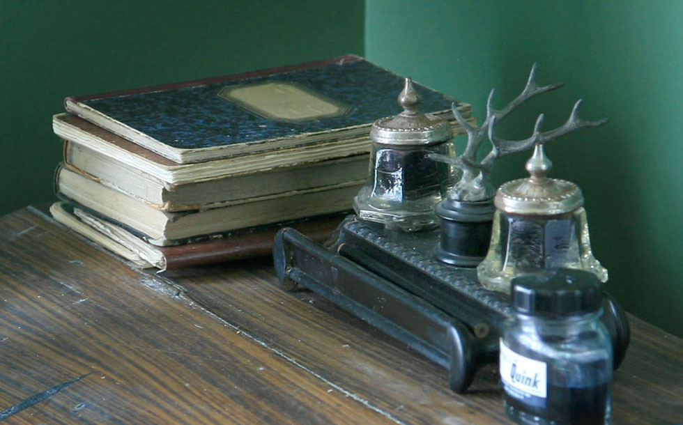
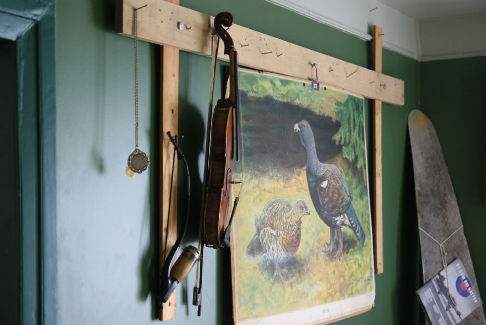

Holt Skolemuseum og Feragen skole
Foto: Torvald Slettebø, Universitetet i Agder, Seniorsenteret
Tekst: Randi Stene
Det er Historielaget for Dypvåg, Holt og Tvedetrand som i dag eier Holt Skolemuseum / Feragen Skole. Historielaget overtok skolebygningen med rommelig tomtegrunn fra Tvedestrand kommune i 1962, samme året som laget ble startet. Bevaring og bruk av skolen har stått sentralt i lagets virksomhet siden den gangen. Mye av arbeidet har vært gjort på dugnad, men det er også gitt pengestøtte fra kommunen, fylket og privatpersoner. Etter at Museumsplanen ble vedtatt får Historielaget hvert år en del av det fylkeskommunale bidrag til kulturarbeidet i Tvedestrand. Skolemuseet er åpent for publikum etter nærmere avtale med Historielaget. Historielagets neste mål er at Holt Skolemuseum/Feragen skole skal få status som regionalt skolemuseum. Dette kan være naturlig, ikke minst fordi skolen lenge var øvingsskole forbispedømmets eneste lærerskole og fordi landskjente pedagoger som A.M. Feragen og Knud Knudsen knyttes til skolen. Da Historielaget overtok skolebygningen, var den i en elendig forfatning, og mange mente at den burde brennes. Bygningen hadde da vært utleid til private i lang tid, og særlig skolestua så ut som en svinesti. Istandsetting av skolestua fikk derfor første prioritet, og snart kunne denne vises fram til skoleklasser og enkeltpersoner. Neste oppgave var å tilbakeføre degneboligen til sitt opprinnelige utseende. Dette arbeidet har pågått helt til det siste, samtidig som det er satset på å utstyre et eget Knud Knudsen-rom ved siden av biblioteket i 2. etasje. Nå vil både degneboligen og Knudsen-rommet kunne vises fram til interesserte, i tillegg til den gamle skolestua.
Alle de eldste skolebygningene i distriktet er forlengst revet, bortsett fra denne på Holt, som er blitt museum. Gamleskolen på Holt ble bygd i 1816-17, og er nå en av de eldste bevarte skolebygninger i landet. Siden A.M. Feragen (1818-1912) var lærer ved skolen så lenge, kalles den ofte Feragen skole. Foruten skolestue inneholdt bygningen bolig for læreren, og fordi læreren ved Holt skole også var degn eller klokker i Holt kirke, ble denne delen av bygningen kalt degneboligen. Det som i dag utgjør Holt skolemuseum / Feragen skole, er altså den gamle skolestua og den tilstøtende lærerleiligheten. Både skolestua og en del av degneboligen er i dag så vidt mulig tilbakeført til sitt opprinnelige utseende; dessuten er det nå innredet et Knud Knudsen-rom i 2. etasje. Skole- og språkreformatoren Knud Knudsen (1812-1 895) gikk på Holt faste skole da han var liten gutt, og han har fortalt om skolegangen og læreren sin i boka Livsminner. Til sammen gir skolestua, degneboligen og Knud Knudsen-rommet et interessant innblikk i forrige århundres skolehistorie. Både barn og voksne kan ha utbytte av en omvisning i Holt Skolemuseum / Feragen skole, og Historielaget ønsker alle interesserte velkommen hit!
Knud Knudsen skriver i sine «Livsminner» at «Degneskolen var sognens faste mønsterskole. Degnen var naturligvis gjævere æn nogen av de omgående skolelærere. I hans skole blev dærfor iblant sat in gutter, som skulde lære mere æn folk flest, altså mere æn andre skoler kunde by.» Han tilføyer at «Fra 1827 var det tilmed slåt fast ved lov, at klokkerens skole skulde være lærerskole for bygden.»
Men alt var ikke like bra: I sin visitasberetning i 1833 kritiserer biskop Sigwardt undervisningen ved skolene både på Holt og Nes Verk: «Ingen av dem svarede til det Krav man paa saadanne er berettiget til at have, men især var Holts faste Skole i en yderst maadelig, for ej at sige slet Tilstand...» - Det fortelles at gamle lærer Ole Reiersen gråt av ergrelse og vrede da han hørte biskopens dom.
Åtte år seinere var likevel tonen en annen. Da får den faste skolen på Holt ros av biskop J. von der Lippe. Skolens 60 barn gjorde «med Færdighed Rede for deres Kundskaber i de Fag, hvori Prøve anstilledes». Og læreren «viste særdeles Dygtighed, og hans Disciplers Fremgang vidned om hans Flid.» Bedringen kan ha sammenheng med at Ole Reiersens sønn, Christian, overtok lærerposten dette året. Christian Reiersen var lærer ved fastskolen i Holt dl han drog til Amerika i 1846, sammen med sin far. Etter Reiersen var det Feragen som overtok.
Opprinnelig var selve skolestua bare halvparten så lang som den er i dag. Likevel rommet den opptil 80 elever, og det ble da mindre enn en kubikkmeter luft til hver elev! (I dag er kravet minst seks kubikkmeter.) Da kunne lufta i skolestua bli så kvalm og full av damp at det rant nedover veggene og dryppet fra taket - og når døra ble åpnet, stod govet som ut fra et fjøs, skriver Feragen i sitt «Tilbagesyn».
Da Historielaget overtok skolebygningen i 1962, var den falleferdig etter å ha vært bortleid til private i mange år. Første oppgave måtte derfor bli å restaurere selve skolestua, og mye av dette arbeidet ble gjort på dugnad. Historielaget fikk dessuten offentlig støttetil å sette skolestua i stand, slik at den kunne vises fram for interesserte. Mange, både skoleklasser og enkeltpersoner, besøkte skolen, også før den ble halvoffentlig museum i 1980. Dessuten har både skolestua og degneboligen vært brukt til foreningsvirksomhet.

Hva så med inventar og undervisningsmateriell ved skolen? En del av dette er heldigvis bevart, og noe er hentet inn fra andre gamle skoler. Det første en legger merke til i skolestua, er kanskje pultene. De er gamle og velbrukte, og har plass til 4 elever hver. Pultlokkene har dype hull til blekkhus, og bærer preg av slitasje etter mange års bruk. Også den gang krota elevene sine initialer der de slapp til. (Å skrive gotiske bokstaver med blekk og penn er gjerne en av de utfordringene dagens sko- lebarn møter når det holdes «gammeldags skoletime» på Gamleskolen!) Feragens gamle, høye kateter er på plass. Det er også den spesielle jernbøylen på veggen i skolestua, som mange tror markerer skammekroken, men som ble brukt i det skoleopplegget som kaltes vekselmetoden, og som kom fra England. Dette opplegget innebar at flinke, eldre elever, såkalte «monitører», hjalp de yngre med leksene. Hensikten med jernbøylen skulle være at barna bedre «conserverede sine, Øine»!

Salmodikonet - populært kalt «salmedunken» - var det vanligste musikkinstrumentet i skolen i gammel tid. Også det henger på veggen i skolemuseet. Dessuten har skolen en mengde av de fargerike plansjene som var så populære i undervisningen - inntil film og video gjorde dem mindre aktuelle. Mange gamle lærebøker er også bevart, delvis i biblioteket i 2. etasje. Dette biblioteket er i seg selv en severdighet; det inneholder både faglitteratur og skjønnlitteratur, mest fra forrige århundre.


Også i degneboligen er det fortsatt inventar fra forrige århundre. Historielaget har lenge vært interessert i å få tak i ting som har tilhørt lærer Feragen og hans familie, og det er temmelig sikkert at noen av parafinlampene, spisebordet, lenestolen og skrivepulten har vært i hans eie. Disse tingene ble solgt på auksjon etter Feragens død i 1912, men er siden kommet tilbake til skolen. Ellers kan en legge merke til de fine Nes verk ovnene i stuene. Ovnen i bestestua har trolig stått der helt siden skolen ble bygd.
Andreas Martinus Feragen
Andreas Martinus Feragen (1818-1912) kom opprinnelig fra Røros-traktene. Etter bare ett år ved det toårige seminaret i Holt tok han en glimrende eksamen i 1843, og fikk blank l i hovedkarakter. Det var sogneprest Faye og jern verkseier Nicolai Aall som oppfordret den unge seminaristen til å søke lærer- og klokkerstillingen i Holt. Feragen søkte, ble ansatt, og kom til å være lærer i Holt i 65 ar! En uslåelig rekord!
Noe av det første Feragen gjorde da han kom til Holt, var a søke om penger til «l Psalmodikon, som kan faaes for l Spd» og «20 Blækhuse, dreiede af Træ med en liden Glaskrukke indvændig og nedfældte i Pulten». Dette var begynnelsen til en lang rekke med fornyelser og forbedringer ved skolen Både ved proste- og bispevisitaser faller det nå lovord om Holt skole og læreren der. I 1847 skriver biskopen at barna ved Holt faste skole «gav saare tilfredsstillende Svar paa de af Læreren i de forskjællige Undervisningsgjenstande, de sædvanlige og desuden Geographie og Historie, fremsatte Spørgsmaal». Og han tilføyer at «Læreren er nu Kirkesanger Feragen, der er en særdeles duelig Lærer.» Også ved visitasene i 1856 og 1860 får Holt skole, eller Feragens faste skole som den nå blir kalt, meget rosende omtale. Prosten J. Aas følger opp: Etter en visitas skriver han at undervisningen ved Holt faste skole er meget planmessig og at bama svarer på spørsmål «med Lyst og Eftertanke». Læreren «besidder udmærket Begavelse for det practiske ved Underviisningen». Og da det i 1870-åra kom på tale å flytte Holt Seminar til Kristiansand, skreiv seminarbestyrer H. Arnesen at Holt hadde «en Øvingsskole, hvis Mage det kun ved de færreste Seminarer er lykkes at istandbringe».
En aktiv skolemann. Men den nye Holt-læreren var aktiv også utenfor skolestua. Alt i 1847 startet han en lærerforening, og i 1856 grunnla han den første skoleboksamlinga i sognet. Mange av de gamle bøkene står ennå i det rikholdige biblioteket på skolen. Feragen ble også kjent som lærebokforfatter. Hans Regnebog for Folkeskolen, som kom i 1877, var i lang tid den mest brukte regneboka i Norge. Ellers skreiv han «Udmaalingsbog indeholdende Veiledning til praktisk Udmaaling og Beregning af Flader og Rumstørrelser, med 110 oplysende Tegninger og 112 Øvelsesopgaver», «Øvelsesbog i Læsning af Haandskrifter», Opgaver og korte Vink til praktisk Regning for Almueskoler» og «Regneøvelser for Pigebørn». Dessuten tikk han trykt mange artikler med pedagogisk innhold, og var i flere år redaktør av fagtidsskriftet «Den norske Folkeskole - Ny Række».
Feragen var også medlem av flere kongelige kommisjoner til bedømmelse av skolebøker. I 1869 ble han på statens bekostning sendt til et stort lærermøte i Sverige, sammen med Hartvig Nissen. Også utenfor skolen hadde Feragen mange interesser. Han var bl.a. kommunerevisor, forlikskommissær og medstifter av Holt Sparebank. I Norsk Biografisk Leksikon heter det at Feragen var en praktisk administrator, initiativrik skolemann og samfunnsborger. Han hadde et vinnende vesen, stort hjertelag, vidsyn og mange interesser. Han regnes som en av det 19. århundres mest fremskutte representanter for seminarutdannede lærere i den norske folkeskole. Ved Oscar II's regjeringsjubileum i 1897 ble han ridder at St. Olav for sin store innsats for folkeskolens utvikling. Dessuten fikk han Borgerdådsmedaljen for fremragende innsats. Etter hans død ble det reist en minnebauta over Feragen på Holt kirkegård. Historielaget sørger hvert år for blomster ved bautaen.
Øvingsskole for Holt Seminar Holt skole var altså den første ordinære fastskolen i Holt, men ikke bare det: Etter at Holt Seminar var kommet i gang på prestegården, ble skolestua også brukt til øvingsskole for seminarelevene. Denne ordningen varte helt til seminaret ble flyttet til Kristiansand i 1877. I dag er denne lærerskolen blitt en del av Høgskolen i Agder.
Lærerskolen på Holt startet i 1839, under sogneprest Andreas Fayes dyktige ledelse. De praktiske øvelsene foregikk dels ved seminaret, dels ved fastskolen, altså den seinere Feragen skole. Seminarets timeplan for 1840-41 viser at det er oppført en time «Practiske Øvelser» og en time «Katechetisk Øvelse» i annen klasse. Videre er 7 timer fordelt over 5 ulike disipliner, som alle i timeplanen er oppført med parentesen «skolen». Også denne undervisningen ble trolig gitt i fastskolen.
Før Feragens tid var det likevel en temmelig løs forbindelse mellom barneskolen og seminaret. Men fra 1854 tilbød Feragen - uten lønn - å gi seminarelevene veiledning i praktikk og undervisningslære. Dette gikk bra, og ble en fast ordning som varte så lenge seminaret var i Holt. Blant dem som gikk på seminaret og fikk sin praksisopplæring av Feragen, var mange som seinere fikk et kjent navn, f. eks. Arne Garborg, Jørgen Løvland, Sven Svensen og Tallak Lindstøl.
Knud Knudsen
Knud Knudsen var sønn av husmann og omgangsskolelærer Knud Reiersen og hustru Marte Stiansdatter. Begge foreldrene kom fra bondeslekter i distriktet her, men hadde sunket ned i husmannsstanden, som så mange andre. Kort tid før Knud ble født, flyttet familien til husmannsplassen Hestehagen under Holt prestegård. Om sin vanskelige oppvekst, med en far som slett ikke fulgte med tida, forteller Knud Knudsen i sine Livsminner:
Den gangen var det skikken at guttene skulle ha lang lugg, såkalt hott i pannen, helst så lang at den kunne rekke under haken. Faren likte ikke den slags nymotens greier, og en dag klypte han hele stasen av Knud, til guttens store sorg! - Og på konfirmasjonsdagen måtte Knud stille opp i «en gammel, stærkt lusleten klædes-livkjole, som engang hadde set bedre dager på en «fomæm» byguts bak»!
Det framgår ellers av boka at Knud alt som fireåring fulgte farens undervisning, og at han lærte fort. 12 år gammel ble han selv huslærer på Østebø i Holt, og 16 år gammel ble han tilsatt som omgangsskolelærer i Våland-Østebø-kretsen. Da fikk han ei årslønn på 30 spesidaler! 18 år gammel tok Knud lærerprøven hos prost Schanche i Risør, som fant ham «udmærket duelig og fuldkommen i enhver Deel.» Da han gikk på latinskolen i Arendal ble Knud kalt Geniet. I 1840 tok han filologisk embetseksamen, og virket deretter som overlærer (lektor) i Drammen og Kristiania. Elevene ved katedralskolen i hovedstaden kalte overlærer Knudsen for Knurren, visstnok pga. måten han snakket på.
Å være husmannsgutt fra Holt var ikke det beste utgangspunktet for en ungdom med ambisjoner. Men med sine usedvanlig gode evner, sin sterke vilje og med framsynte folks hjelp greide Knud Knudsen å nå fram til en betydelig posisjon i samfunnet. Alt i 1840 hadde han sitt radikale reformprogram klart: Han ville kjempe for gjennomgripende reformer, både når det gjaldt skriftspråket og skolen. For Knudsen var dette to sider av samme sak: Målstrev og pedagogiske reformer hang uløselig sammen, og de hadde begge sitt utgangspunkt i skolestua. Fra nå av brukte han all si fritid til utrettelig agitasjon for sitt syn, spesielt gjennom artikler i bøker, tidsskrifter og aviser. Knudsen var en utpreget stridsmann, og ved siden av Ivar Aasen er han trolig den enkeltperson som har betydd mest for utviklingen av skriftspråket her i landet. Spesielt den videregående skolen er sterkt preget av hans tanker og innsats.
Språkreformatoren: AIt som student i 1845 skreiv Knudsen en artikkel «Om Lydene, Lydtegnene og Retskrivningen i det norske Sprog». Han mente at skriftspråket skulle være ortofont, dvs. det skulle rette seg «etter den almindeligste Udtale af Ordene i de Dannedes Mund» - dvs. den såkalte dannede dagligtale. På den måten ville avstanden mellom skrift og tale bli minst mulig. F. eks. burde ord som Characteer og Philosoph skrives karakter og filosof. Knudsen vant gehør for dette; disse endringene ble gjennomført alt i 1863.
Viktigere for Knudsen var kampen mot de «bløde» konsonantene b, d og g, som han oppfattet som danske, selv om han personlig hadde vokst opp like ved grensa til Austre Moland, som jo også den gang utvilsomt hørte til «den bløde kyststribe»! «Pibe» og «bage» måtte erstattes med «pipe» og «bake». Mer kjent er likevel Knudsens frontalangrep mot fremmedorda. Han ville ha norske ord i stedet for latinske og tyske. Slett ikke alle hans forslag til avløserord hadde livets rett, men ord som allmennskole, ordskifte og bakstrev er blitt stående. Knudsen fikk også etter hvert gjennomslag for at de «latinske» bokstavtypene (som vi bruker i dag), skulle avløse de «gotiske».
Endelig bør det nevnes at samtidig som Knudsen kjempet for et norskere språk, var han i likhet med bl. a. Henrik Ibsen tilhenger av at de skandinaviske skriftspråk skulle nærme seg hverandre. (Kfr. Ibsens Gengangere, ikke Gjengangere!) Både Bjørnson og Ibsen gav uttrykk for at Knudsen hadde betydd mye for dem i deres språkrøkt, og det er full enighet om at han gjorde en stor innsats som språklig veileder, også for Det norske Theater.
Knud Knudsens målstrid skapte strid og tok tid, men mange av hans forslag slo gjennom med rettskrivingsreformene i 1907, 1917 og 1938. Mens Ivar Aasen er nynorskens far (eller bestefar), kan en med stor rett hevde at Knud Knudsen er bokmålets! Utgangspunktet for Knudsen - som for Aasen - var at fordi landet i 1814 var blitt en egen nasjon, trengte det et eget skriftspråk. Men i motsetning til Aasen valgte Knudsen å «flikke» på det skriftspråket som var i bruk den gangen. Derfor ble han skjelt ut som «Sprogflikker» og «Maalskrædder», mens Aasen ble hyllet for sitt rotnorske nyskapingsarbeid. Med all respekt for Ivar Aasen vil nok mange hevde at det likevel er Knud Knudsens linje som har «vunnet» i språkstriden.

Også i skolen, der Knudsen hadde sitt daglige virke, var han en opprører. Spesielt i den videregående, eller «lærde» skolen, latinskolen, var det etter hans oppfatning nødvendig med store reformer. Latinskolen var preget av «de døde språk», grammatikkpugg og gloseterping. Knudsens mål var å forandre den fra å være en forskole til universitetet til å bli en allmennskole - og da måtte fag som norsk, historie og samfunnskunnskap få sentral plass. Først litteraturen, så språket og sa grammatikken! sa Knudsen. Han gikk til felts mot latinens og greskens dominerende plass, og opplevde alt i 1857 en seier, da den latinske stilen ble avskaffet til studenteksamen. En latinskole uten latin, var hans program. Som det var den gangen, kunne den lærde student mer om romerstaten enn om fedrelandet, sa han, og spurte: «Hvordan kan vi lære humanitet av de gamle romere, de som plaget sin egen almue, sine slaver og alle folk de kom i kontakt med?

Knud Knudsen fikk mange fiender på grunn av sitt reformprogram, ikke minst blant sine egne kolleger. Det ble satt i gang den rene kjetterprosessen for å stanse «latinskolens banemann». Men Knudsen gav seg ikke. Hans valgspråk var: «Gradvishedens Vej, ikke Braahastens! Med List og Læmpe kommer et Kryb så langt som en Kjæmpe!» Og etter hvert tok stadig flere opp Knudsens tanker, ikke minst i det politiske miljø. Folk som Søren Jaabæk og Johan Sverdrup støttet Knudsen i Stortinget. I samsvar med Knudsens nasjonale program fikk morsmålet med gammelnorsk sterkere innpass. 11869 ble realartium innført, og like etter Knudsens død i 1895 forsvant latinen som obligatorisk fag i den høyere skolen. Ingen reformpedagog har nådd så langt ut og virket så direkte på opinionen, skriver Helge Dahl i boka om Knud Knudsen og Latinskolen.
For sin innsats ble Knud Knudsen slått til ridder av St. Olav, og av Stortinget fikk han 3000 kroner i etterlønn. Knud Knudsen døde ugift i Kristiania i 1895, der graven hans er slettet. Men i 1969 ble det reist et et minnesmerke over Holts store sønn på Holt kirkegård. Hesthaghuset, der han ble født, er flyttet og satt opp igjen ved Aust-Agder-Museet i Arendal.
Noen av Knud Knudsens skrifter:
1845: Om Lydene, Lydtegnene og Retskrivningen i det norske Sprog
1850: Om Norskhed i vor Tale og Skrift
1856: Haandbog i dansk-norsk Sproglære
1857: Lærebog i dansk-norsk Sproglære
1866: Om tilnærmelse mellem Norsk, Dansk og Svensk
1867: Det norske målstræv
1876: Den landsgyldige norske Udtale
1881: Unorsk og Norsk, eller fremmedords avløsning
1886: Hvem vil vinne?
1887: Kortfattet redegjørelse for det dansk-norske målstræv
1888: Tyskhed i norsk og dansk
1893: Norsk målvekst fra 1852
 






Litteratur
A.M. Feragen: Tilbagesyn paa mit Liv. Hamar 1904.
Knud Knudsen: Livsminner. Oslo 1937
0. Lægdene: Øvingsopplæringen ved Kristiansand Stifts Seminar.Hovedoppgave i pedagogikk. Oslo 1976.
Helge Dahl: Knud Knudsen og latinskolen. Universitetsforlaget 1962.
Einar Nes s: Det var engang - Norsk skole gjennom tidene.Universitetsforlaget. Oslo 1989.
Hans-Jørgen Dokka: En skole gjennom 250 år. NKS-Forlaget 1988.
Ellers finnes det lett tilgjengelig stoff om skolen, A.M.Feragen og Knud Knudsen i noen av de bøkene Historielaget har for salg, bl.a. ved Holt skole-museum/Feragen skole: Holtsboka, Omkring Vestlandske Hovedveg, Den høyere skole i Tvedestrand og Dengang - på våre kanter 1982,1987,1992 og 1994.
Tvedestrand skolestyre har tidligere gitt ut Ingrid Gledje Berges bok: Jern, jord, skuter og handel. En historisk vandring gjennom Tvedestrand.